RAX
Scaling Online Exploration for Robot Agents
Scaling Online Exploration
for Robot Agents
* Equal contribution † Project lead ‡ Core contributor
Preprint · 15 October 2026
Background and problem
Background: the current scaling recipe
Robot learning has advanced by scaling demonstrations and model capacity.
Vision-language models
Video generation models
Large teleoperation
corpora
VLA / world-action
models
What this buys
Broad visual and semantic priors,
combined with robot action data.
What is being scaled
The training dataset and the model
that imitates its behavior.
Background and problem
New embodiments and tasks still need adaptation
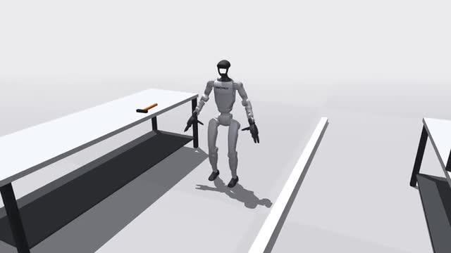
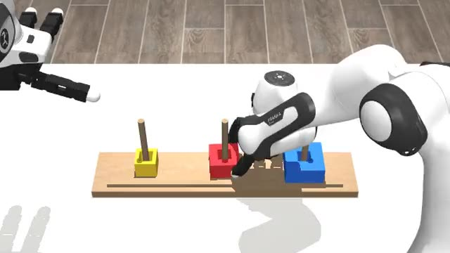
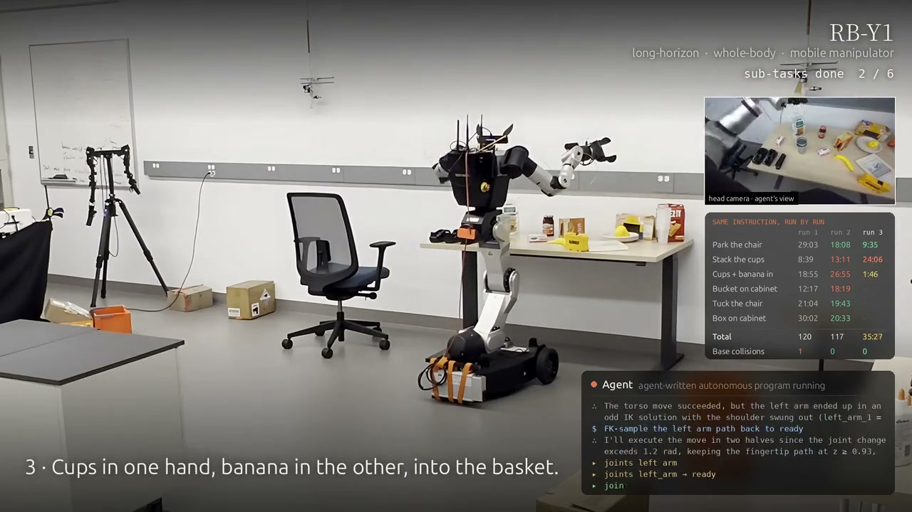
A new embodiment
Different cameras, kinematics,
hands, and control interfaces.
A new task or scene
Different geometry, appearances,
and compositions of familiar skills.
How can the robot acquire the task knowledge missing from its demonstrations?
Background and problem
A concrete task: put six books into a box
Six books in four bookcases.
One box on the living-room floor.
Goal: every book is inside the box.
Perception, navigation, and grasping must work together.
Find the books
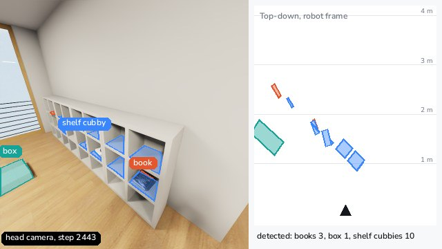
Grasp a book
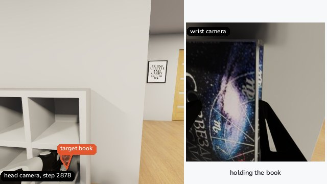
Place it in the box
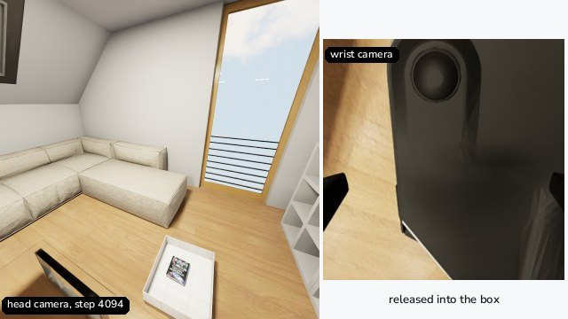
Illustrated replay: 3 of 6 books packed. The complete goal requires all six. Accelerated playback.
Background and problem
Task, interface, exploration budget, and output
The agent receives
- A natural-language task and goal information
- Perception and robot-control APIs
- A budget of exploration episodes
Goal images / demonstrations vary by benchmark.
interaction→
The agent produces
An executable program that
perceives, plans, acts,
and checks outcomes.
Plus notes and reusable skill artifacts.
Run the submitted solution on new scenes under the benchmark's execution protocol.
Related work
Where RAX fits among agentic robot systems
Instructions → robot control
Executable programs, situated plans,
and 3D value maps.
Code as Policies · ProgPrompt
VoxPoser
Learning through interaction
Experience improves policies,
programs, and task strategies.
ENPIRE · FAEA
Encore · Baton
Experience → memory
Code skills and textual lessons
persist across attempts.
Voyager · Reflexion · ExpeL
Game skills and language-agent memory
RAX's focus
Repeated online program development across diverse robot embodiments.
Exploration-scaling experiments · Depth ablations · Skill-reuse case studies
These ingredients have precedents; RAX studies their combination and scaling.
Method
Running task: manipulate an air fryer
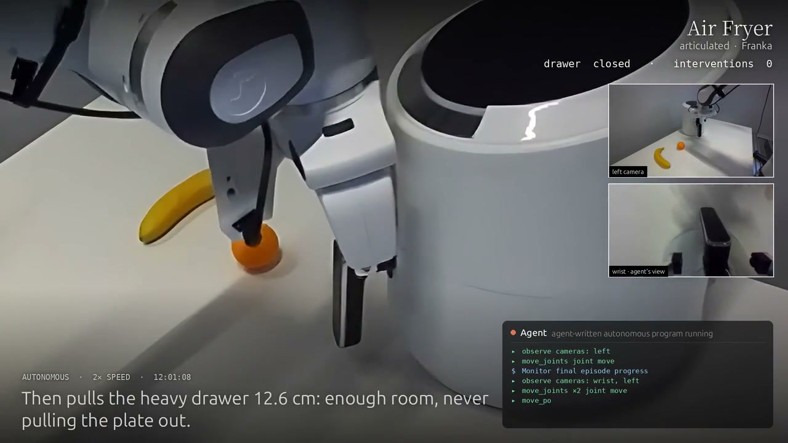
Goal
Open the drawer, place a banana
inside, then close the drawer.
What makes it difficult?
- The fryer pose changes between runs.
- The drawer is articulated.
- Grasp, reach, and release clearances interact.
Franka FR3 · RGB-D sensing · no task action demonstrations
Method
How RAX turns experience into programs
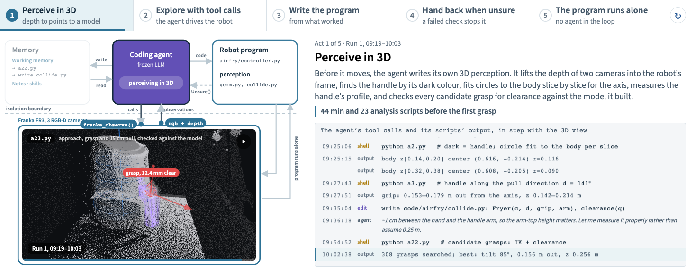
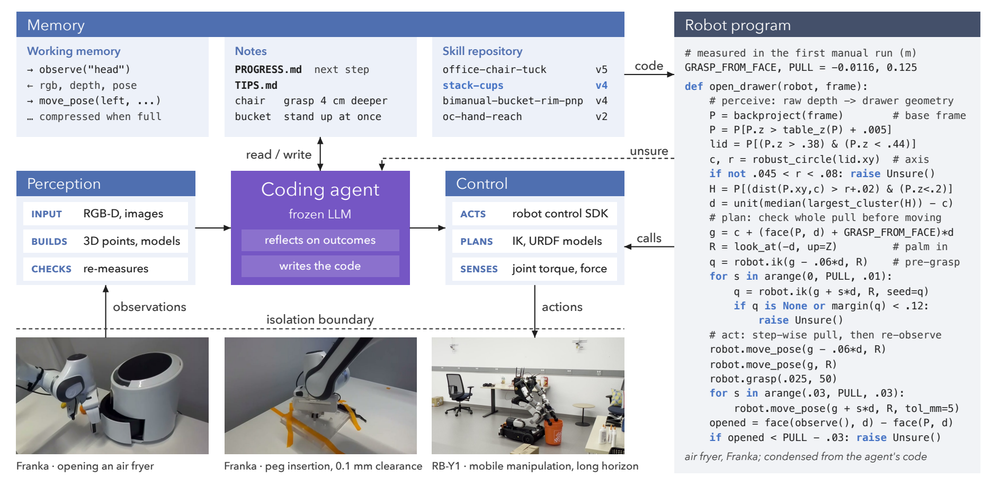
Method
The robot interface separates infrastructure from learning
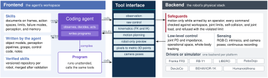
Provided
Sensing, low-level control, safety limits,
robot models, and interface documents.
Discovered through exploration
Task geometry, grasps, decision logic,
checks, recovery, and verified skills.
Method
Perception: an articulated model fitted to the scene
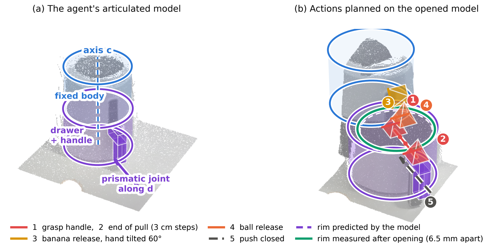
Measured in each scene
- Body axis and handle direction
- Handle geometry and drawer opening
Learned from earlier trials
Body dimensions and a model
of the drawer's articulation.
Used for planning
Candidate hand poses and
clearance checks.
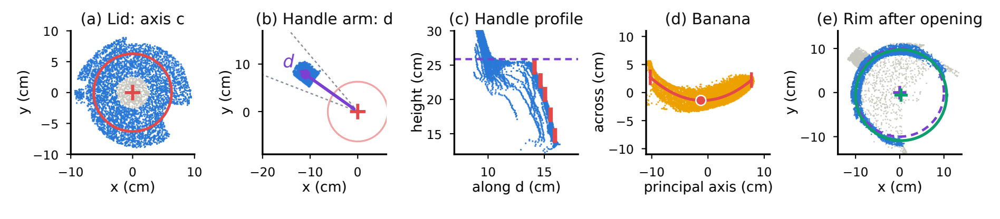
Robust numerical estimators turn raw depth into action geometry.
Circle fits, height slices, principal axes, and a curve fit are written into the program.
Method
Planning: exploration discovers geometric constraints
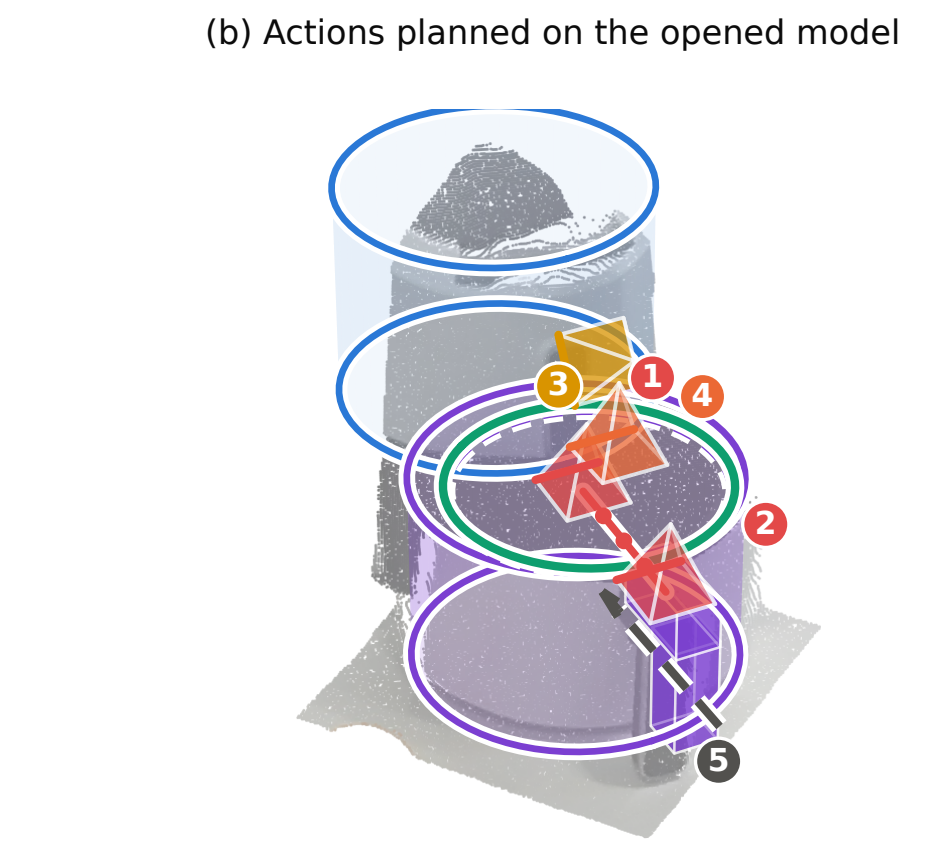
Preserve joint margin for the pull
Grasp the short upper arm from above,
after a front grasp proves restrictive.
Move in 3 cm increments
Follow the fitted direction and check
clearance on the articulated model.
Fit 18 cm into a 19 cm basket
Tilt the hand by 60° to create
clearance for the banana and fingers.
Method
Repeated decisions become executable feedback logic
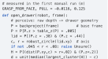
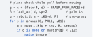
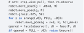
Measure the current geometry
Fit the object model and reject
estimates outside expected bounds.
Check the motion before acting
Test inverse kinematics and joint margin
over the entire planned pull.
Act, re-observe, or raise uncertainty
Use the same robot tools. Return control
when the program's assumptions fail.
Method
Memory preserves strategies and verified skills
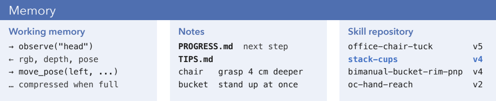
Within the session
Preserve confirmed strategies, failed approaches,
and useful measurements through context compression.
Across sessions
Store skill code, applicability conditions, checks,
and evidence of an unattended success.
Cross-session repository reuse is demonstrated on real robots. Simulation benchmark sessions start without prior task memory.
Evaluation
Five benchmarks, distinct evaluation contracts
Five benchmarks stress different parts of robot behavior.
Precision and sequences
Tabletop manipulation
Long household tasks
Mobile manipulation
Grasp, walk, and balance
Whole-body control
Finger-level grasp design
Dexterous manipulation
Same goal, new layout
Layout generalization
Shared question
How does held-out task performance change as exploration increases?
Metrics, demonstrations, sensing, and execution conditions differ across benchmarks.
Develop the program
Direct trials and rehearsals
consume the same episode budget.
Freeze the solution
Pass an isolated end-to-end rehearsal
on a new exploration scene.
Official unseen scenes
Use the native benchmark metric
and stated execution mode.
Program alone: fresh environment, no agent edits or retries, no test feedback returned.
BEHAVIOR exception: five tasks use an agent; three also receive reviews from other test instances.
Evaluation
More exploration improves the aggregate performance
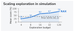
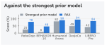
+37.4 percentage points is the mean margin over prior learned models across five benchmarks.
Equal benchmark weighting. Task-specific budgets and carried-forward results. DexJoCo uses the bimanual subset.
Evaluation
RoboDojo: precise and sequential tabletop tasks
Make toast
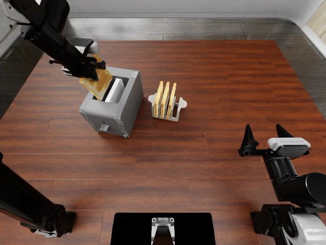
Plug in a charger
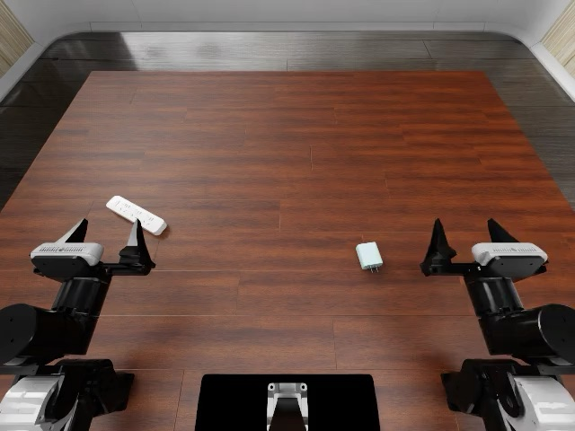
Declare a Mahjong kong
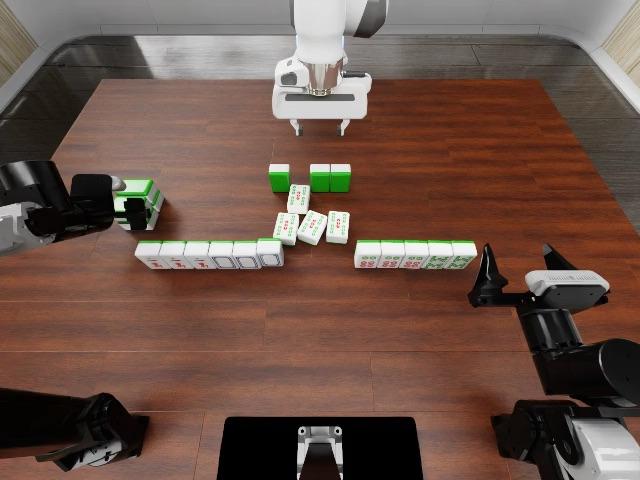
What varies
7 tasks: layout, precision,
memory, sequence, language.
What the agent gets
ARX X5, RGB-D, scoring rubric,
one completed-task image.
What is evaluated
4–64 exploration episodes;
program alone on 30–50 layouts.
Task illustrations from the benchmark; the toast experiment uses the randomized variant. Native score includes partial credit where defined.
Evaluation
RoboDojo: viable strategies can unlock tasks abruptly
Native score (%) on unseen layouts; – not run; † no program submitted.
Charger: 26 → 94 after increasing the budget from 4 to 8 episodes.
Mahjong improves from no submitted program at 8 episodes to 96 at 32. Randomized mug hanging remains near 33–39.
Evaluation
BEHAVIOR-1K: long household sequences
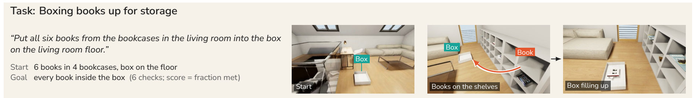
Six selected household tasks
Books, organizing, sorting, food,
desk cleanup, and loading a car.
A mobile manipulation interface
Base, torso, arms, and grippers;
head/wrist RGB-D and odometry.
Q-score over 10 public instances
Fraction of satisfied goal conditions.
Up to 128 exploration episodes.
Boxing books runs as a program alone. The other five use an agent; three receive reviews of other test instances.
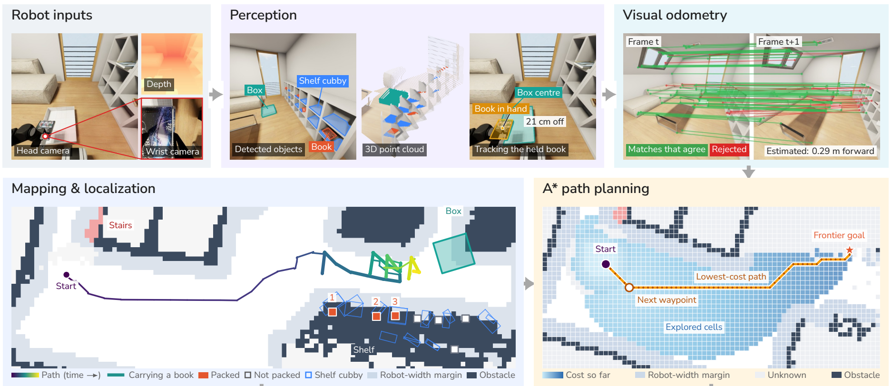
Boxing books: detect objects, estimate motion, map the scene, and plan paths with A*.
Evaluation
BEHAVIOR: progress is substantial but task-dependent
Q-score (%) on ten public test instances; † program-only execution.
Average Q-score: 46.5 versus 8.2 for the strongest listed challenge entry.
Loading the car reaches 100; getting organized reaches 9. Five tasks use an agent, and three receive cross-instance reviews.
Evaluation
HumanoidArena: grasp, walk, cross, and place
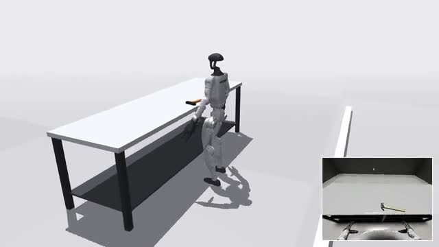
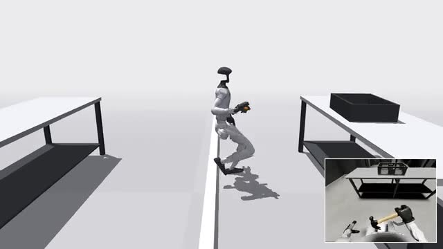
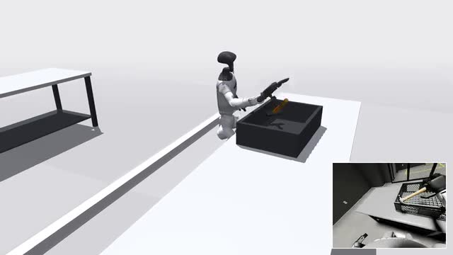
Control
G1 with Dex3 hands;
whole-body references + SONIC.
Learning condition
Main result: 3 action demos/task.
32–128 exploration episodes.
Evaluation
7 tasks, 60 episodes/task.
Binary success; a fall is failure.
DoubleDesk links locomotion and manipulation. The task illustrations above come from the separate action-free case.
Evaluation
HumanoidArena: difficult sequences need more exploration
Success (%) on 60 official episodes/task; main RAX uses 3 action demonstrations.
Mean success rises from 52.1% at 2 episodes to 80.7% at 32.
Task-specific maximum budgets reach 89.8%. The action-free variant reaches 81.9% with visual demonstrations retained and larger budgets.
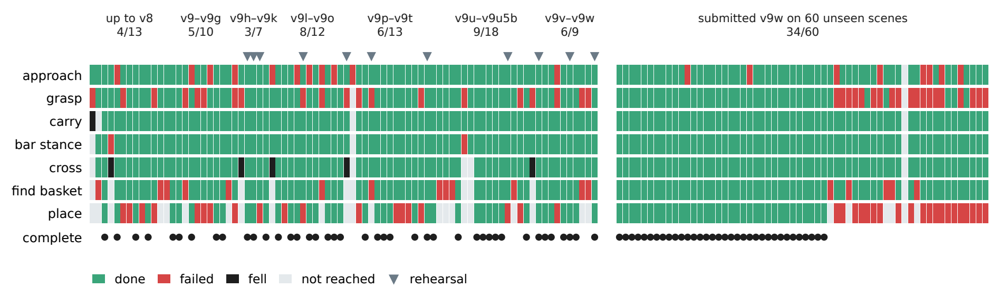
One DoubleDesk controller: 34/60 complete tasks, with grasping still the bottleneck.
Crossing succeeds in all 59 logged formal episodes; the grasp holds in 40. Intermediate versions can regress.
Evaluation
DexJoCo: grasp design with dexterous hands
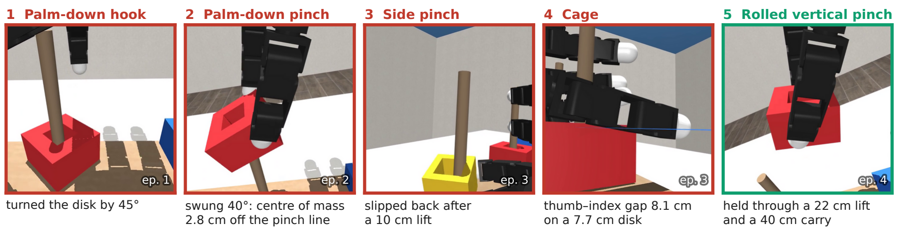
Hanoi: move the red disk, then the yellow disk onto the right peg, keeping each disk level.
Robot and variation
Franka arm(s) + 16-DoF hands.
Object positions and table height vary.
Task information
RGB-D + proprioception;
3 goal images, no action demos.
Evaluation
2–32 exploration episodes.
11 tasks × 150 held-out episodes.
Episode 2: a failed pinch
Episode 6: a successful program
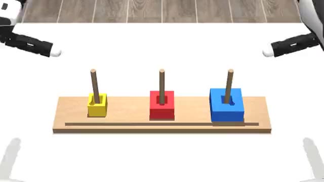
A revised grasp becomes part of an executable solution.
Accelerated qualitative case study: episodes 2 and 6 of a 47-episode session.
This trace is separate from the fixed-budget benchmark results.
Evaluation
DexJoCo: bimanual tasks reveal the exploration gain
Success (%) over 150 episodes/task; the fixed 32-episode row is the comparison here.
Across 11 tasks, 32 episodes yield 96.7% versus 65.3% for ME-Dex.
Single-arm tasks saturate early. The headline uses five bimanual tasks; 99.5% is a separate best-session-across-budgets statistic.
Evaluation
LIBERO-Pro: the goal stays, the layout changes
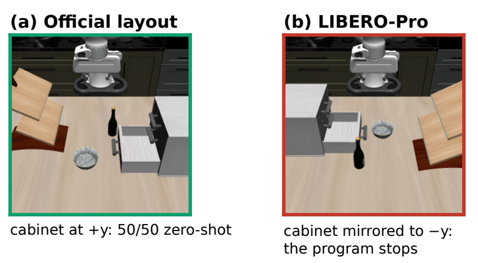
Put the bowl in the bottom drawer and close it.
What changes?
The cabinet moves to the other side
and faces the opposite direction.
What is tested?
Whether the program measures
the new task frame and adapts.
Four suites, 40 tasks
Spatial, Object, Goal, and Long.
Inputs
Agent-view/wrist RGB-D;
3 goal images, no action demos.
Exploration
Up to 20 episodes, then
up to 5 optional adaptation episodes.
Evaluation
Program alone on 50 standard
and 50 perturbed states/task.
Evaluation
LIBERO-Pro: re-perception transfers, local repairs extend it
Success (%) on position-perturbed states; standard LIBERO is a separate setting.
Without adaptation: 76.0%. With adaptation on five tasks: 84.4%.
Goal and Long improve most. The cabinet repair succeeds, but a microwave task remains at 2%, so adaptation is not uniformly effective.
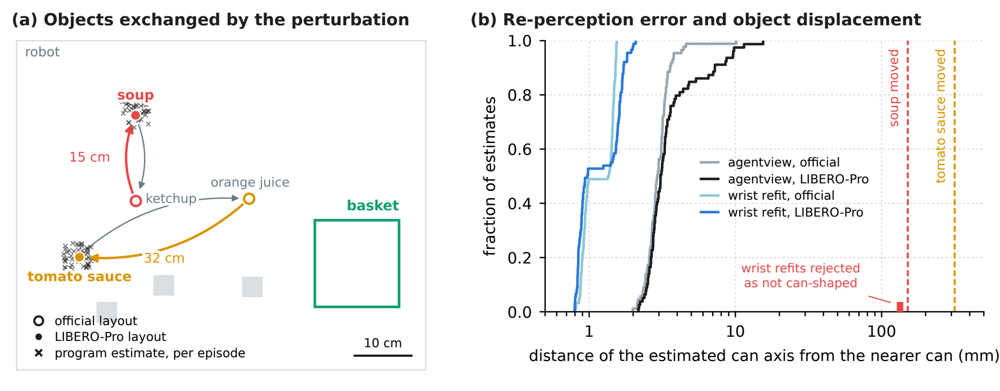
Why transfer can work: re-measure objects instead of replaying their old coordinates.
Two-can case: 15/32 cm shifts, 1.0 mm median wrist-refit error, 44/50 perturbed successes. Initial occlusion causes the six failures.
Mechanisms
Exploration moves decisions from reasoning into code
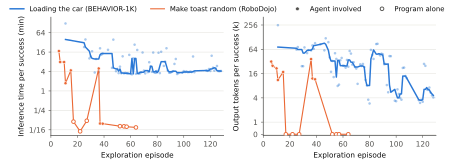
Loading the car: 123 min / 254k tokens → 4 min / 4k tokens.
Successful episodes only. Environment execution still takes more than one hour per episode.
Air fryer: 72.3 min → 18 s of inference overhead.
The robot still needs about 2.5 minutes. The 241× ratio does not describe total task duration.
Mechanisms
Depth enables metric decisions instead of fixed assumptions
RGB-D improves the mean score by 17.3 points across four matched settings.
With depth: recover metric slot / bread geometry. RGB only: approximate calibration, assumed heights, and visual servoing.
Mechanisms
Active perception learns which measurements the task needs
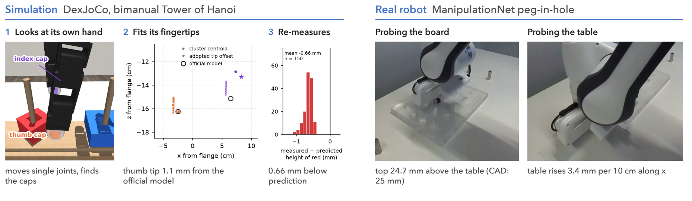
Calibrate the hand, verify placements, and probe what vision cannot resolve.
Hanoi thumb offset: 1.1 mm from the hidden model. Placement height check: mean −0.66 mm over 150 episodes.
Mechanisms
Failures become checks in later programs
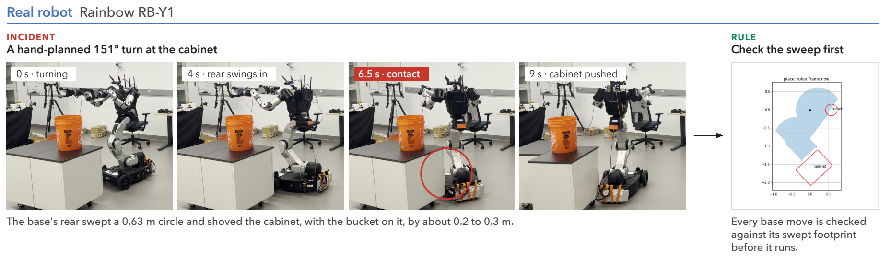
A collision becomes a check before every later base move.
The agent evaluates the swept footprint, rather than only the destination pose.
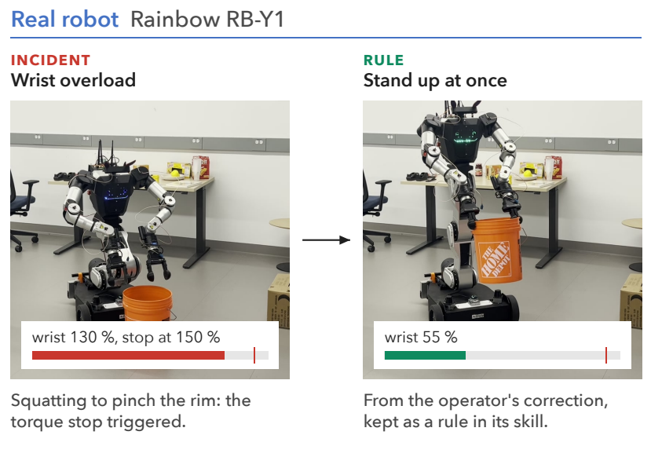
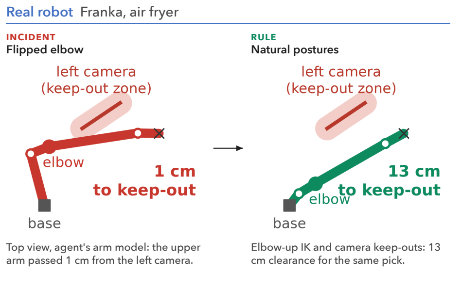
Retain a correction as a reusable rule.
Standing before lifting follows operator advice. Camera incidents motivate posture and keep-out checks.
Mechanisms
The agent requests new tests of generalization
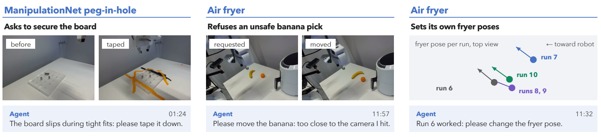
After success, the agent asks for new object placements.
Fryer tests span up to 7 cm translation and 18° rotation. One placement requires help and exposes two errors to fix.
Reuse and adaptation
A six-stage mobile task needs current scene geometry
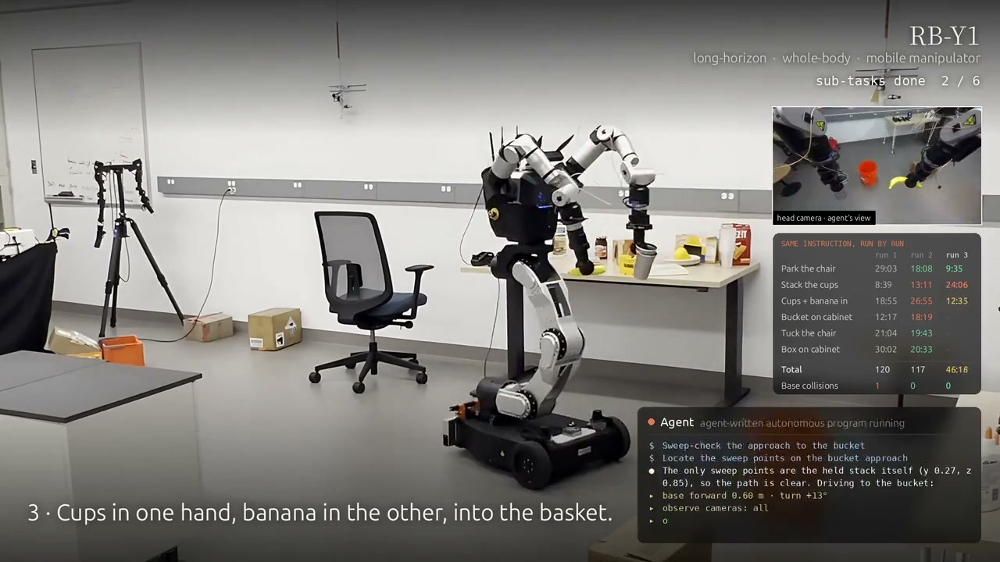
One instruction, six stages
Compose skills learned in
five earlier practice sessions.
3/3 complete trials
Final trial: 98 min.
Agent checkpoints and operator support.
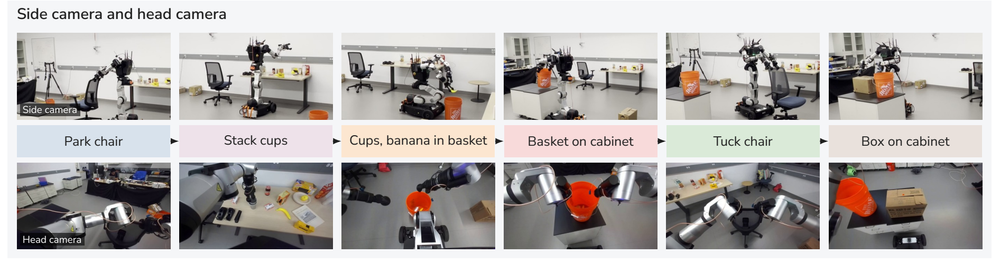
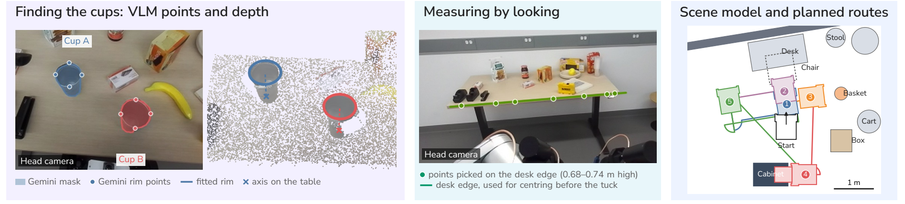
Stored skills are grounded again in cup rims, desk edges, and routes through the current scene.
Reuse and adaptation
Skill composition includes local revision
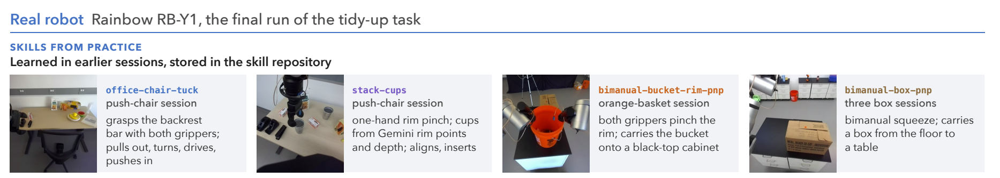
Four stored skill modules become building blocks for the longer task.
Each module carries executable code, applicability conditions, and evidence from practice.
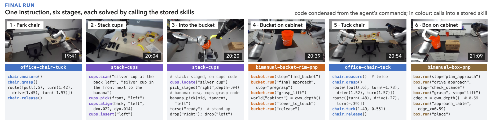
Call a stored skill and connect it to the next stage.
Chair and cup routines are reused; task-specific code handles the banana and the transition into the bucket.
Reuse most code; revise the interface to the new scene.
Bucket/box changes: about 25 of 1,200+ lines. A chair grasp is revised 4 cm deeper; new reaching code becomes a skill.
Reuse and adaptation
Task changes trigger selective program repair
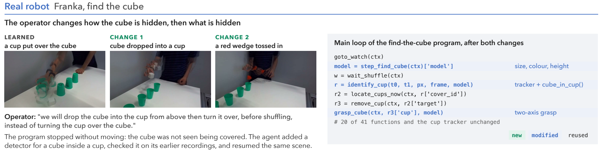
A failed assumption identifies the module that needs repair.
The agent adds an upright-cup detector, then preserves 20 of 41 functions when the cube becomes a wedge.
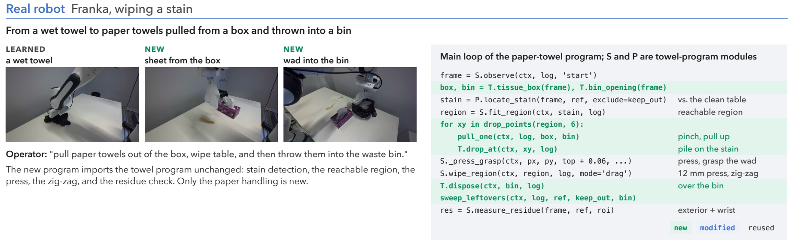
A changed tool can reuse working perception and control modules.
Paper retrieval and disposal are new. Stain removal succeeds in two wet runs; leftover-sheet cleanup remains supervised.
Discussion
What scales with online experience?
Capability
Higher held-out scores, with task-specific plateaus and regressions.
Execution efficiency
More decisions run as code; model deliberation and output tokens fall.
Measurement and checks
Experience changes sensing, calibration, verification, and preflight rules.
Reusable knowledge
Skills compose, receive local repairs, and create new reusable helpers.
The learned state is an evolving executable system, supported by task-specific evidence.
Discussion
Limits of the evidence and next experiments
Compute and cost
> US$100k
Model API credits
across the full study
All simulation and real-robot experiments.
An aggregate research cost, not a per-task figure.
Cost effectiveness
Lower inference overhead in the final program does not establish a low total cost of learning.
Fair comparisons
Match sensing, demonstrations, feedback, and compute budgets.
Long-term reliability
Test skill regressions and account for operator time, resets, and safety.
Next evaluation: performance versus API spend, robot hours, and operator effort.
Discussion
Online experience becomes reusable robot knowledge
RAX makes the experience-to-program
loop a scaling axis for robot learning.
Learn task geometry and control strategies through interaction.
Automate recurring decisions in feedback programs.
Accumulate verified skills for later tasks.
Can executable knowledge become a reliable, scalable complement to learned policy parameters?
Appendix
Appendix: platform control contracts
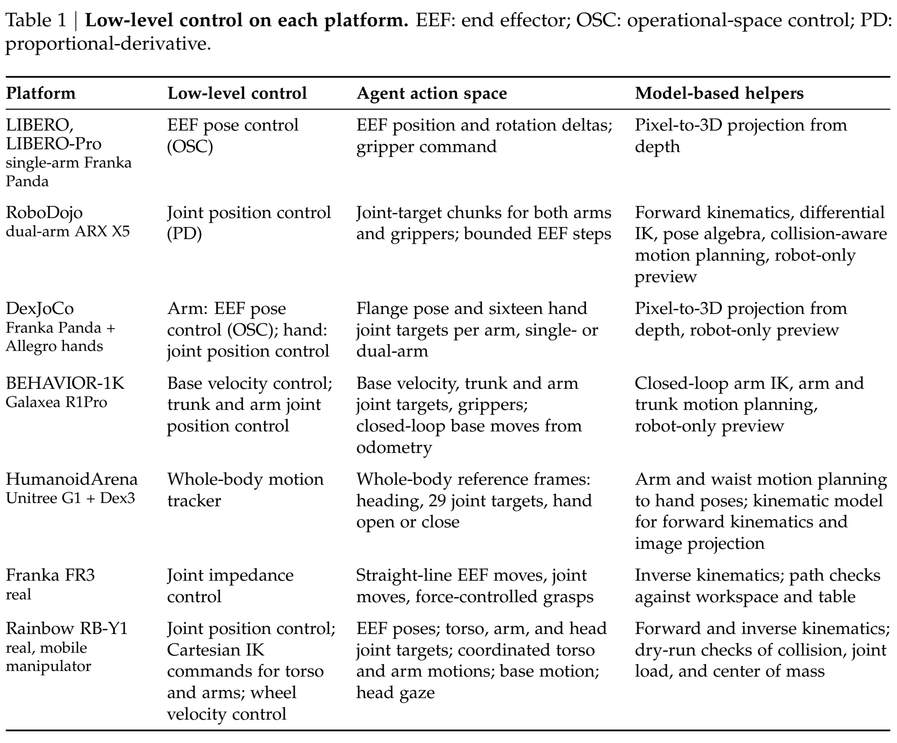
Appendix
Appendix: generic instructions supplied to each session
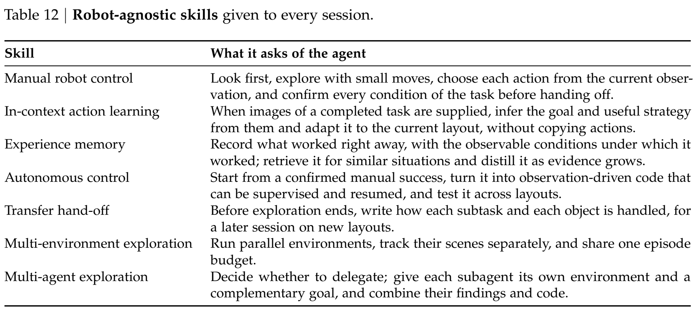
Appendix
Appendix: parallel exploration
Codex: 32 episodes take 14.2 h with one agent/environment and 9.2 h with two.
Claude comparison changes both parallelism and the episode budget. Treat it as a configuration comparison.
Appendix
Appendix: humanoid demonstrations without actions
Removing action data still reaches 81.9% mean success.
Visual demonstrations remain, and exploration budgets increase. The setting differs from the main RAX row.
Appendix
Appendix: inference latency and output tokens
Successful episodes only. Inference excludes simulator / hardware execution time.
Appendix
Appendix: skill composition trace
Appendix
Appendix: full architecture and generated code
Appendix
Appendix: unattended Bandu reconstruction
Seven pieces rebuilt
Final unattended reconstruction:
7 / 7 pieces in 663 seconds.
The session includes earlier exploration,
failures, and operator support.
The inference comparison uses a 6-piece agent run and a 7-piece program run.
Appendix
Appendix: the full boxing-books program
Appendix
Appendix: both program-adaptation cases
Additional analysis
Large layout shifts can still yield small localization errors
Objects move 15 and 32 cm; wrist re-perception has a 1.0 mm median error.
One LIBERO case: 44/50 perturbed successes. All six failures start with an occluded can.
Additional analysis
Grasp search resolves a geometric constraint
A rolled vertical pinch clears the peg and keeps the disk level.
The successful carry in episode 4 is a component success, not the first complete task execution.
Additional analysis
Stage-level traces reveal the remaining bottleneck
The final DoubleDesk program completes 34/60 episodes.
Crossing succeeds in all 59 logged formal episodes; grasping holds in only 40. Development is not monotonic.
Additional analysis
The geometric model uses concrete numerical estimators
Robust circle fits, quantiles, principal axes, and curve fitting turn depth into task geometry.
Per-scene pose and opening estimates are combined with dimensions learned in the first agent-controlled run.
Additional analysis
Verification can change how the program looks at the scene
An exterior-camera clean verdict can miss thin streaks.
Operator feedback prompts a higher-resolution wrist-camera check and another wipe.
Additional analysis
Precision insertion combines CAD, contact, and a tilted entry
Register the board, search by contact, insert a corner, then turn upright.
0.1 mm clearance is reached with supplied CAD and supervision. L4 is not attempted.
Additional analysis
The aggregate and baseline comparisons use different contracts
Headline: +37.4 pp
Equal-weight margins over five learned-model comparisons. DexJoCo uses bimanual tasks only; LIBERO-Pro includes adaptation.
LIBERO-Pro versus ASPIRE
RAX: unperturbed development, then at most five adaptation episodes on five tasks. ASPIRE: debugging and validation within each perturbed distribution, plus unspecified evolutionary search count.
BEHAVIOR-1K
Five tasks are agent-in-the-loop. Three receive other-test-instance reviews. Boxing books is program-only, without keyframes or VLM calls.
Technical backup
Development workflow and recovery examples
Explore directly
Observe and confirm
a first success.
Write the program
Encode decisions from
current observations.
Rehearse and repair
Inspect failed stages
across new layouts.
Freeze and submit
Pass an isolated
end-to-end rehearsal.
Early program failure
A later unattended run
Accelerated official session clips. The learning session includes operator support and multiple revisions.
Technical backup
RAX turns online experience into robot programs
RAX uses a coding agent to develop and improve robot programs through online exploration on diverse simulated and real robots.
One agent architecture
Different embodiments
Use each robot's sensing
and control interfaces.
Learn through interaction
Programs and skills
Write, test, revise, and retain
executable task knowledge.
Scale the experience
More exploration
Test whether larger budgets
improve held-out performance.
What changes with experience?
Model weights stay fixed; programs, notes, and verified skills improve.
Shared architecture · Robot-specific interfaces · Online program development